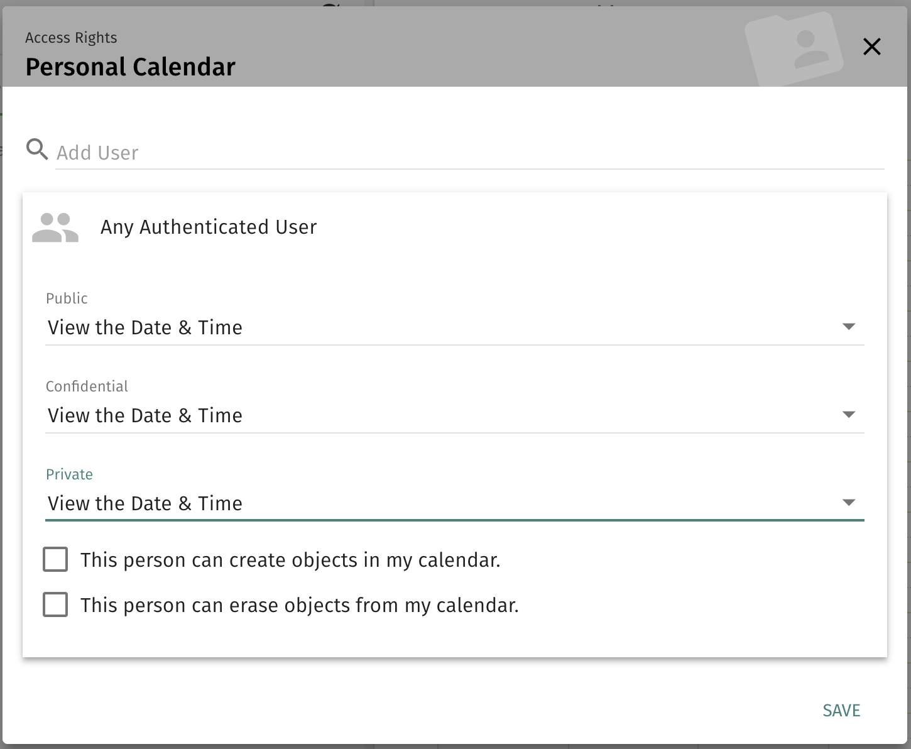
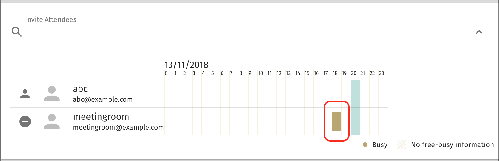

This tutorial is a slight rewritten of SOGo wiki tutorial for iRedMail: Use Resources with SOGo.
SOGo supports the management of resources like meeting rooms. A resource has, just like a person, a calendar, an email address and may be invited to events. The big difference is that resources auto accept invitations.
When you mark a mail user as a meeting room resource, SOGo will display its Free/Busy info when you invite this user in a calendar event.
This document has been tested with iRedMail-0.9.8 and SOGo-4.0.x, but it should work fine with any iRedMail releases and SOGo v2/v3/v4.
We need 2 new LDAP schema files, you can click links below to download them:
Upload downloaded schema files to iRedMail server which runs OpenLDAP backend, copy them to default schema directory:
/etc/openldap/schema//etc/ldap/schema//usr/local/etc/openldap/schema//etc/openldap/schema/Edit OpenLDAP config file slapd.conf with your favourite text editor, add 2
new include directives right after the iredmail.schema line like
below:
/etc/openldap/slapd.conf/etc/ldap/slapd.conf/usr/local/etc/openldap/slapd.conf/etc/openldap/slapd.confAttention
Please make sure you're using the correct schema directory.
# this line already exists
include /etc/openldap/schema/iredmail.schema
# Add below 2 new lines
include /etc/openldap/schema/calresource.schema
include /etc/openldap/schema/calentry.schema
Since we don't use any new ldap attribute names in LDAP query filter, no index required for new attribute names.
Now restart OpenLDAP service.
SOGo needs 2 parameters to understand which LDAP attributes it should query to understand the resources:
KindFieldName: specify the LDAP attribute name which stores resource type.
SOGo will try to determine if the value of the field corresponds to either "group", "location" or "thing". If that’s the case, SOGo will consider the returned entry to be a resource.
MultipleBookingsFieldName: specify the LDAP attribute name ewhich stores
multiple booking type.
The value of this LDAP attribute is the maximum number of concurrent events to which a resource can be part of at any point in time.
Edit SOGo config file sogo.conf, add these 2 new parameters in the global
address book section like below:
/etc/sogo/sogo.conf/etc/sogo/sogo.conf/usr/local/etc/sogo/sogo.conf/etc/sogo/sogo.conf SOGoUserSources = (
...
{
// Used for global address book
type = ldap;
id = global_addressbook;
...
// Add below 2 lines
KindFieldName = "Kind";
MultipleBookingsFieldName = "MultipleBookings";
}
...
Now restart SOGo service.
We use mail domain name example.com for example below, you need to replace it
by your real domain name during testing.
meetingroom@example.com.ldapvi on iRedMail server, then run command ldapvi like this:Attention
ldapvi is like vi/vim text editor for editing LDIF data directly.dc=xx,dc=xx by the real LDAP suffix.cn=manager,dc=xx,dc=xx.ldapvi -D 'cn=manager,dc=xx,dc=xx' -b 'o=domains,dc=xx,dc=xx' -W "mail=meetingroom@example.com"
In the ldapvi editor, you should see full LDIF data of user
meetingroom@example.com. Please append few lines for this user:
objectClass: CalendarResource
objectClass: calEntry
Kind: location
MultipleBookings: 1
Save your change and quit ldapvi (just like quitting vi/vim text editor).
Login to SOGo webmail as meetingroom@example.com, then click the Calendar
icon on top-right corner.
Click the three-dot icon beside Personal Calendar, and choose Sharing....
Any Authenticated User, set values of
options Public, Confidential and Private to View the Date & Time.
Save your changes.
meetingroom@example.com as attendee.meetingroom@example.com as attendee, this time SOGo will indicate
meetingroom@example.com is busy in the time window of first event.